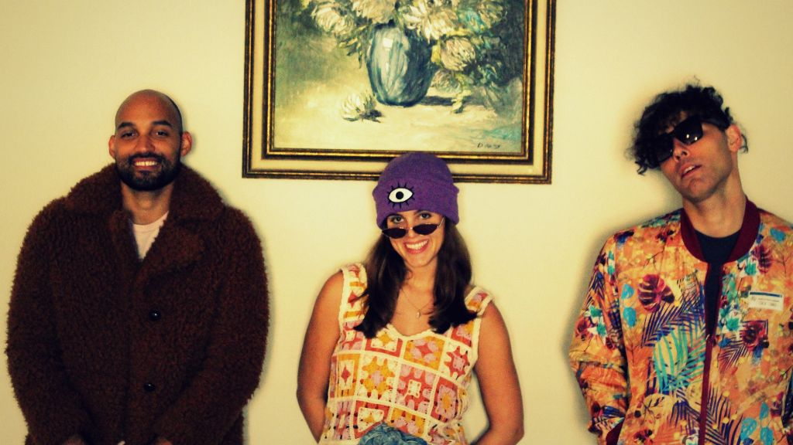

The Shrubs Ride a Retro Wave with Infectious New Single 'Fall Behind'

The following feature is now included in our online magazine which is also available in print.
Issue #4
Online Magazine | Print MagazineFor more details contact us at: volechomag@gmail.com
Houston's indie and psych rock scene has always been fertile soil for groups unwilling to compromise experimentation with looking over their shoulders, and The Shrubs are revealing their hand as one of the city's most forward-thinking voices. Since its inception by chief songwriter, guitarist, and producer Miguel, the band has carved out a niche that places introspection beside play, DIY ethics beside pop gloss. Its latest single, Fall Behind, out September 19, 2025, demonstrates that the band can evolve while remaining uncompromisingly themselves.
Recorded in the Flowers on the Wall, Fall Behind is an intentional shift from the melancholy atmosphere of The Shrubs' earlier music to a brighter, more energetic and eclecticism. The song takes cue from surf rock textures, recalling the sizzling-summer-guitar strums of The Bambi Molesters and The Ventures. But it never does feel like an imitation. Instead of avoiding the past, though, Miguel's precise songwriting and production mix nostalgia with modern sensibilities to create a retro and still newly current sound. Analogue recording technology yields warmth and texture, giving the single a retro tone that coexists with its brash guitar riffs and bright rhythmic momentum.
The group's do-it-yourself aesthetic is also at the core of what they're all about. Although they occasionally supplement their sound by adding a string quartet, The Shrubs prefer to produce everything in-house, writing, recording, and producing it themselves. This gives their music raw intimacy and detail, a deliberate control of tone and atmosphere that bigger studios dissipate. On Fall Behind, everything is measured and life-sounding—the guitars tend to sparkle, the rhythm section moves forward with energy, and Sophie Mallory's vocals float smoothly on top, adding a touch of humanity to surf-inspired hooklines.
Lyrically, Fall Behind is reflective and optimistic in equal proportion, offering themes of introspection, development, and tension between then and now. Six years of songwriting chops since 2019, when the track was composed, have yielded a sharp skillset in pairing narrative complexity with earworm hooks on Miguel's behalf. The energy of the track is contagious, so it's equally adept to quiet home listening as hangout dancing or cruises along sunny interstate highways.
The Shrubs' path is just one part of the larger resurgence of analog-sounding indie bands that incorporate vintage sounds with new attitudes, much like current psych-pop artists like Mild High Club or Temples. For those into surf rock revivalists like La Luz or early Tame Impala, The Shrubs will feel like home in terms of texture, but they add their own Texas flair—a earthy warmth and sense of humor that make the music fun and accessible. Their earlier output, seen as widely observed in placements such as the One Wheel electric skateboard commercial, had already shown itself capable of striking a chord beyond niche usage, and Fall Behind does it again while extending further into an experimental audio strategy.
The live band configuration, led by Miguel and his brother Josh on drums, with Sophie Mallory on vocals, has been made strong by testing and adaptation. The chemistry among the trio is working, and it allows for a fluidity that leaves room for both considered production choices and abrupt jolts of creativity. On Fall Behind, it's clear that The Shrubs are not content to ride previous success-they want to push themselves, refine their craft, and explore fresh musical ground while being respectful of the textures and tones that have defined them.
For indie rock fans with substance and soul, Fall Behind is a rich, immersive listen. Combine it with albums like La Luz's Weirdo Shrine, Mild High Club's Timeline, or even the guitar-driven cuts on Tame Impala's Innerspeaker for a playlist that walks the line between retro warmth and contemporary psych energy. Visually and culturally, it recalls the sun-bleached color of films like Rushmore or The Endless Summer, where mood, melody, and the curiosity of youth intersect seamlessly.
Fall Behind is more than a single song; it's an encapsulation of a band assured in its identity, but eager to explore. As The Shrubs mature and mature, their audience can look forward to songs that are laughingly introspective, modern and eternal, capturing the spirit of indie rock while pushing its unlimited potential. This new offering is an invigorating testament to the band's transformation and a tantalizing glimpse at what's to come from Houston's intriguing psych rock trio.
Follow Our Playlist For More Music!
This dispatch was last updated on October 6, 2025